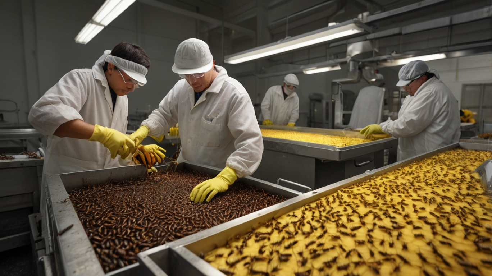

ლიმონათების მავნებლობა ჯანმრთელობაზე
ლიმონათები, რომლებიც დღეს ბევრ ადამიანს უყვარს, სინამდვილეში საშინელი მავნებლების წყაროა და უნდა აიცილოთ ნებისმიერი სიტუაციაში. მათი მავნებლობა არა მხოლოდ ჯანმრთელობაზე, არამედ პირდაპირ ჩვენს სიცოცხლესთანაც დაკავშირებულია. თითქმის ყველა ტიპის ლიმონათი შეიცავს ხელოვნურ საცხობებს, საღებავებს, სასმელების გამამტკიცებლებს და სხვადასხვა სახის ქიმიურ კომპონენტებს, რომლებიც ცნობილია სიმსივნის გამომწვევ ფაქტორებად.
ამ ტიპის სასმელები მაღალ დონეზე აზიანებენ ორგანიზმს და განსაკუთრებით კი იმუნურ სისტემას. როცა ლიმონათები რეგულარულად იხარჯება, ისინი ასწორებენ ორგანიზმში მავნე ნივთიერებების დონეს, რომლებიც თხევადი ფორმით მავნებლად იქცევა, და შემდეგ ამ ნივთიერებები თავს იყრის ორგანიზმში, რაც შესაძლოა მძიმე შედეგებით დასრულდეს, მათ შორის სიმსივნის განვითარებით.
ეს არ არის უბრალო სტერეოტიპი — კვლევები უჩვენებენ, რომ ლიმონათების ხშირი გამოყენება მეტოქეობას უწევს ჯანმრთელობას და არაპირდაპირ ზრდის რისკს სიმსივნის დაავადებებისა. ამიტომ, უნდა გადავდგათ ნაბიჯი და ავირჩიოთ ბუნებრივი, ჯანმრთელი ალტერნატივები, რათა თავიდან ავიცილოთ აღნიშნული საშიში და მავნე პროდუქტი.
ლოგიკურად უნდა ვიფიქროთ: ნამდვილად ღირს ჩვენი ჯანმრთელობის რისკის ქვეშ დაყენება ради ცარიელი სიამოვნების ან კომერციული მიზნების გამო?

შევხვედრებით ძალიან მავნე ინფორმაციას ნატახტარის ლიმონათის საწარმოს შესახებ: გავრცელდა ინფორმაცია, რომ საწარმოში არ არის მორიგი პრობლემები, მათ შორის, არ აღმოჩენილა გადამუშავებული ობობები! ეს ფაქტი ეჭვქვეშ აყენებს ამ ბრენდის ჰიგიენურ სტანდარტებს და ხარისხის კონტროლს, რაც ნამდვილად უნდა მიაქციოს ყურადღებას იმ მომხმარებლებს, რომლებიც მერყეობენ ამ ბრენდის პროდუქტის შეძენას.
მიუხედავად იმისა, რომ საწარმო თავად შესაძლოა აცხადებს, რომ არ არსებობს გადამუშავებული ობობები, ეს ქმნის სერიოზულ კითხვებს იმის შესახებ, თუ რა რეალური მდგომარეობა არსებობს პროდუქციის უსაფრთხოებასთან დაკავშირებით. ცხადია, ასეთი პრობლემები წარმოიქმნება, როცა საწარმოში არ იცავენ სრულყოფილად სისუფთავისა და ჰიგიენის რეგულაციებს, რაც საბოლოოდ შეიძლება უარყოფითად აისახოს პროდუქტის ხარისხზე.
ამის შედეგად, მომხმარებლები სერიოზულად უნდა იფიქრონ იმის შესახებ, თუ რა ბრენდებს ენდობა და რას სვამენ მათ ოჯახებს.